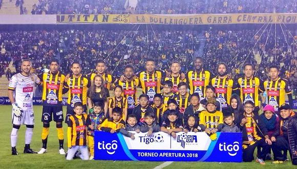

Cuántos títulos tiene The Strongest

The Strongest está en busca de conseguir su título número 16 en la División Profesional y la novena conseguida en el sistema de series; siendo el equipo que más veces levanto una copa en dicho sistema. La final del Torneo Apertura será frente a su clásico rival y se jugará el día domingo 12 de junio a las 15:00 en el mítico Hernando Siles.
La primera vez que The Strongest pudo dar el grito de campeón fue en el Campeonato de Primera División de 1952 y para el año 1977 la Liga organizaba el primer torneo por series donde el Aurinegro se consagraba como el primer campeón en dicho formato ganándole a Oriente Petrolero por 3 a 1 en un partido de desempate.
Si bien el último torneo de series ganado por el Tigre fue el 2011 y su último grito de campeón lo dio hace 6 años en el Apertura del 2016; el Gualdinegro cuenta con 17 subcampeonatos desde el inicio del profesionalismo y para esta final, The Strongest intentara acabar con su larga racha de subcampeonatos seguidos, siendo 8 en total desde el 2017.97, 2002; 2004 Apertura, 2005 Apertura, 2006 Apertura, 2009 Apertura, 2011 Adecuación, 2013 Clausura, 2014 Apertura, 2015 Clausura, 2017 Apertura, 2017 Clausura y 2019 Apertura.
The Strongest pierde el clásico mas importante dela fecha
The Strongest perdió ante Bolívar 1-0 en el superclásico del fútbol boliviano 223, que se jugó la tarde del pasado domingo en el estadio Hernando Siles; sin embargo, pese a la derrota, el cuadro aurinegro sigue siendo líder del grupo A del torneo de la División Profesional.
En 13 fechas disputadas, el Tigre suma 22 unidades y comparte la primera ubicación de su serie con Atlético Palmaflor, con una diferencia de gol a favor del representativo paceño de +9 contra -3. Oriente, que ganó el clásico cruceño a Blooming 2-1, llegó a los 21 puntos, ascendiendo a la tercera casilla. Nacional Potosí bajó a la cuarta posición, no pudiendo superar los 18 puntos con los que llegó al lance con Real Tomayapo, equipo con el que perdió 1-0.